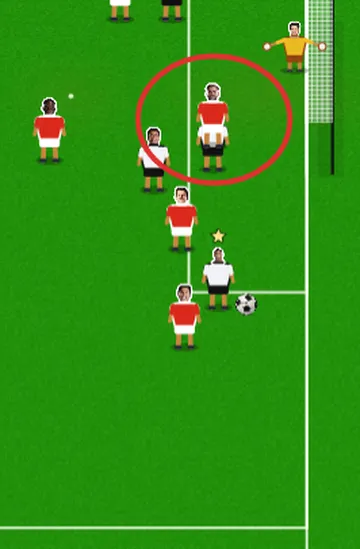
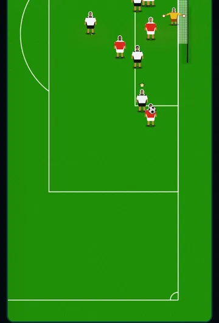
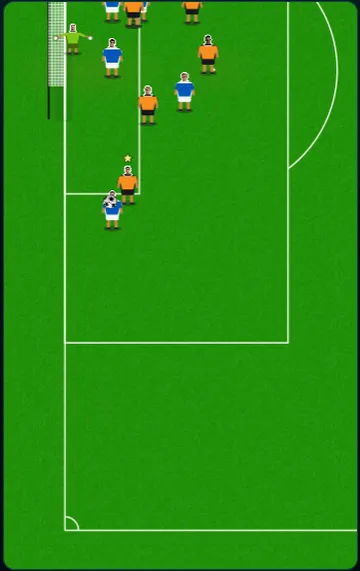
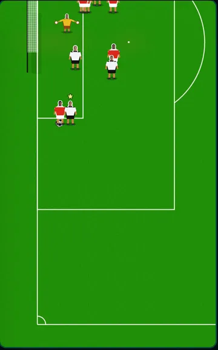
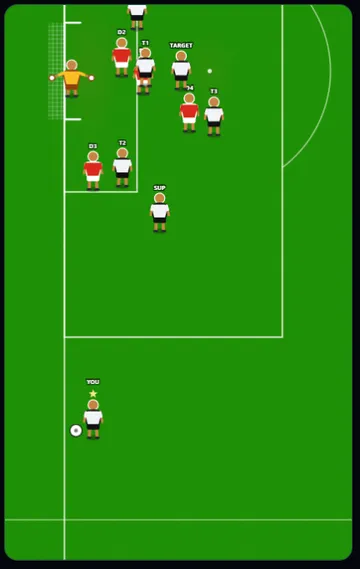
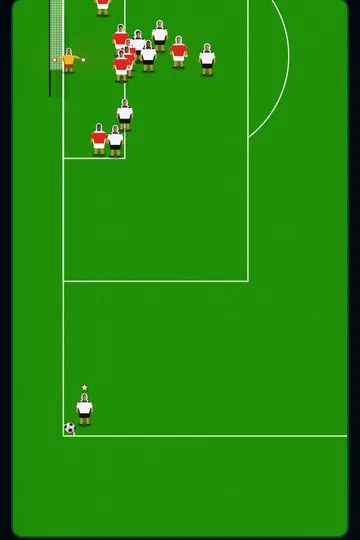

25 September 2026 · branch Mikey · 10 pushed changes + 2 waiting · tests: 171 of 172 passing (the 1 also fails on main)
Problem: at a corner or cross, a striker standing behind his marker was drawn over him, head planted in the marker's shirt, as if standing on top of him. It happened from every camera angle.
Why: players weren't drawn in order of who was nearer. They were drawn in fixed groups (team-mates, runners, defenders, you, then the keeper), and whoever's group came later was always on top.
Fix: every player, and the keeper, is now drawn furthest-first by where his feet touch the grass. Lower on the screen means nearer the camera, from any angle. Same in the scenario gallery picture. seen


Problem: with a defender standing just in front of you, the ball at your feet was drawn across his head, as if he had it.
Why: the ball was always drawn last, on top of everybody.
Fix: the ball now joins the same nearest-in-front order, placed by its shadow on the grass. Anyone nearer the camera partly covers it. A lofted ball can now pass behind a nearer player, and the landing cross and ball trail sit under the players. seen not pushed yet


Problem: corners, in the real game and the gallery, were taken 6–7.5 m in from the flag.
Why: on purpose, in the match engine. The corner camera never zoomed out, and it couldn't fit the flag, room to drag back for power, and the far post all at once.
Fix: the ball now starts in the corner arc (0.45–0.75 m from the flag). On corners only, the camera shows 48 m of pitch instead of 42 m, so players on corners are about 13% smaller. The far post sits exactly where it did, and the pull-back room below the ball is the same as the old spot at its worst (21% of the screen). Byline crosses are unchanged. seen
And in the gallery: the gallery picture drew the goal line right across the frame and the touchlines the full height of it, with no corner arc. With the ball on the real flag, the corner looked like a spot in the middle of two crossing lines. Both lines now stop at the corner and the 1 m quarter circle is drawn, the same as the match. The gallery cards also now draw the nearer player, and the ball, in front. seen not pushed yet


This is in lib/star/canvasEngine.ts (buildCorner and a new CORNER_VIEW_X), the file normally kept off-limits. Mikey approved changing it for this. One test that held every chance to a 42 m zoom (support.mts) now allows corners as the one exception.
Problem: every trophy and award was an emoji (🏆 🥇 🏅).
Fix: 14 pictures are now shown in the Trophy Cabinet (including the Ballon d'Or box and each award), on the end-of-season awards cards, in feed posts about a trophy win, and on the Garden's glass shelves (your 6 most recent). Backgrounds were cut out, and each file shrank from about 2 MB to 27–81 KB. seen
Community Shield, Super Cup, Conference League, European Championship and Play-Offs have no picture yet. Send one and it slots straight in.
Problem: the gallery builds rules for a chance type from saved drawings (5 or more needed), and long range had 1, so it had no rules to simulate new ones from.
Fix: 12 new long-range drawings, each built so a defender steps out 4–8 m to close the shooter, the back line holds 11–15 m out, and the keeper is just off his line toward his near post. Simulate: 400 of 400 built from the drawings, 0 rules broken, 3.75% with a minor fault. measured
Problem: tapping High or Low mid-commentary carried on the current stretch at the old mode, and High barely did anything.
Why: a new mode only kicked in at the next stretch, and High's extra chances ran into a cap at about +23%.
Fix: a switch re-runs the rest of the stretch from the next minute at the new mode. Everything already on screen stays identical. High now gets an extra share of chances that come only to you. measured (1,500 simulated matches)
authoredChance.mts fails 7 checks after the one-on-one drawing changes on main. Same failures before and after this round's changes. Harry to look.